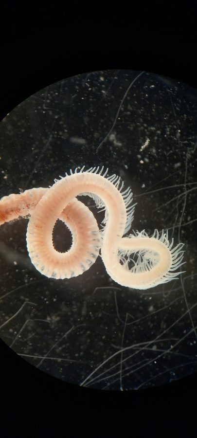

गिल्ड ट्यूबीफिसिड वर्मGilled Tubificid Worm
Branchiura sowerbyi · Naididae · SFL-0017

- Scientific name वैज्ञानिक नाम
- Branchiura sowerbyi Beddard, 1892
- Family कुल
- Naididae
- Hindi हिंदी
- गिल्ड ट्यूबीफिसिड वर्म
- Local names स्थानीय नाम
- gilled tubificid worm, galphadedar keechad kenchua, branchiura sowerbyi, aquatic worm, talab kida
- Status here यहाँ की स्थिति
- native
- Movement आवागमन
- Resident, here all year
- Known from कहाँ दर्ज
- Others have published records from the wider Awadh–Purvanchal plain, none yet from Basti–Ayodhya अवध–पूर्वांचल से दूसरों के प्रकाशित अभिलेख, बस्ती–अयोध्या से अभी नहीं
- IUCN IUCN
- not evaluated
- Review समीक्षा
- not yet reviewed
When to look कब देखें
Present all year. साल भर मौजूद।
Tell it apart from इनसे अलग पहचानें
गिल्ड ट्यूबीफिसिड वर्म / Gilled Tubificid Worm
Branchiura sowerbyi Beddard, 1892 — Naididae
गिल्ड ट्यूबीफिसिड वर्म — तालाबों, झीलों और धीमी बहने वाली नहरों के तलछट (कीचड़) में रहने वाला एक अनोखा जलीय केंचुआ। इसके शरीर के पिछले हिस्से पर नन्हे गलफड़े (गिल्स) लगे होते हैं, जिन्हें यह पानी में लहराकर सांस लेता है। इसका आगे का हिस्सा कीचड़ में गड़ा रहता है जबकि पिछला हिस्सा पानी में लहराता रहता है। यह मछलियों का एक मुख्य प्राकृतिक भोजन है।
Quick Identification त्वरित पहचान
| Feature | Description |
|---|---|
| Habit | Elongate, reddish-pink benthic tubificid worm burrowing vertically in aquatic mud |
| Gills | Conspicuous paired finger-like branchial gills on dorsal and ventral midline of posterior segments |
| Coloration | Bright reddish-pink to orange due to abundant haemoglobin in blood |
| Posture | Anterior body buried in mud while the posterior gill-bearing tail undulates in water |
| Retraction | Snaps instantly back into mud tube when disturbed by shadows or water vibrations |
Field tip: Look in shallow muddy margins of village ponds where water is still; observe dozens of tiny reddish thread-like tails swaying rhythmically above the sediment surface.
हिंदी — कैसे पहचानें: लाल-गुलाबी जलीय केंचुआ, शरीर के पिछले हिस्से पर उंगली जैसे गलफड़े, और कीचड़ से निकलकर पानी में लहराने की आदत।
Morphology आकारिकी
Adult description: Robust, elongate aquatic oligochaete worm. Body composed of 120 to 190 segments, cylindrical, tapering gradually towards the posterior end. Coloration bright reddish-pink to deep crimson in life, caused by dissolved haemoglobin in blood plasma. Most diagnostic morphological feature is the presence of pairs of elongate, unbranched, digitiform respiratory gills situated along the dorsal and ventral midlines of the last 50 to 120 segments; gills increase in length towards the posterior end before shortening at the tip. Setae present in four bundles per segment: ventral bundles with two to six bifid crotchets; dorsal bundles with one to three short hair setae and one to three bifid needles. Clitellum developed in segments 10 to 12 in mature individuals.
हिंदी: यह एक लाल रंग का जलीय केंचुआ है।
Behaviour & Ecology व्यवहार और पारिस्थितिकी
- Rhythmic Respiratory Undulation: Anchors head downward in the mud and waves the posterior gill-bearing region rhythmically in open water to facilitate oxygen uptake.
- Hypoxia Tolerance: Highly adapted to low-oxygen aquatic sediments; haemoglobin blood and waving gills allow survival in severely hypoxic benthic environments.
- Benthic Bioturbation: Ingests subsurface mud and excretes castings at the sediment-water interface, recycling mineral nutrients into the water column.
- Tube Construction: Builds flimsy vertical mud tubes held together by mucus secretions in fine clay sediments.
हिंदी: यह कीचड़ में सिर नीचे करके रहता है और अपने गलफड़ों को पानी में हिलाता है। यह बहुत कम ऑक्सीजन वाले गंदे पानी में भी आसानी से जी सकता है।
Life Cycle / Phenology जीवन चक्र
- Reproductive Maturity: Reaches breeding condition during the warm summer and monsoon months from May to September.
- Cocoon Production: Mated individuals deposit small oval transparent cocoons into the surface sediment.
- Hatching: Young worms emerge directly from cocoons without a larval stage, burrowing immediately into the mud.
- Continuous Generations: Maintains overlapping generations in perennial ponds throughout the twelve months of the year.
हिंदी: गर्मियों और बरसात में यह कीचड़ में अंडे देता है। अंडों से नन्हे केंचुए निकलकर तुरंत कीचड़ में बिल बना लेते हैं।
Host Plants or Prey आहार
- Benthic Detritus: Fine settled organic matter, decomposing plant fragments from peepal and aquatic weeds.
- Microbial Biofilms: Digests benthic bacteria, diatoms, and protozoans adhering to silt grains.
- Sediment Ingestion: Continuously swallows fine silt particles to extract organic nutrients.
हिंदी: यह पानी में डूबे सड़े-गले पौधों के अंशों, कीचड़ और उसमें मौजूद बैक्टीरिया को खाकर पोषण लेता है।
Predators / Natural Enemies शत्रु
- Benthic Fishes: Catfishes, carps, and loaches feed heavily on exposed waving tails.
- Aquatic Insects: Predatory dragonfly nymphs and giant water bugs seize worms at the sediment surface.
- Wading Birds: Egrets, sandpipers, and pond herons probe pond mud for gilled worms, while common mynas forage along exposed margins.
हिंदी: सिंघाड़ा, मांगुर और अन्य मछलियां इसे बहुत चाव से खाती हैं। बगुले और पानी के कीड़े इसका शिकार करते हैं।
Agricultural / Human Relevance कृषि प्रासंगिकता
- Aquaculture Food: Premium live natural food resource for commercial fish farming and freshwater carp nurseries.
- Water Quality Bioindicator: Abundance indicates moderate organic enrichment; tolerates organic pollution where other invertebrates perish.
- Sediment Oxygenation: Burrowing activity enhances oxygen penetration into otherwise anoxic pond muds.
हिंदी: यह मछली पालकों के लिए बहुत उपयोगी है क्योंकि मछलियां इसे खाकर तेजी से बढ़ती हैं। यह तालाब के पानी को साफ रखने में मदद करता है।
Expected Locally स्थानीय रूप से अपेक्षित
Not a field record. Written from published accounts for eastern Uttar Pradesh. No confirmed local sighting yet — if you have seen it, that is what the atlas needs.
अभी तक स्थानीय पुष्टि नहीं। यह विवरण प्रकाशित स्रोतों से है, किसी अवलोकन से नहीं।
Expected in soft benthic sediments of perennial ponds, oxbow lakes, slow canals, and river margins across Basti, Ayodhya, and neighbouring Awadh districts. GBIF holds published records from the wider Awadh–Purvanchal plain, none yet from Basti–Ayodhya. To confirm this species for the Atlas, provide a clear photograph showing the posterior branchial gills, along with date, time, and specific location.
Distribution वितरण
Global range: Native to South, East, and Southeast Asia; now widely introduced and established across Europe, the Americas, and Africa.
In India: Widespread across the Indo-Gangetic basin, peninsular waterbodies, and freshwater wetlands.
In Uttar Pradesh: Recorded from ponds, canals, and river backwaters in Lucknow, Varanasi, Gorakhpur, and Prayagraj.
In Basti district / eastern UP: Expected in village temple ponds, oxbow lakes along the Kuwana and Manorama rivers, and sluggish drains across Basti.
हिंदी: यह जलीय केंचुआ पूरे भारत और एशिया के मीठे पानी के जलाशयों में बहुत आम है। उत्तर प्रदेश के तालाबों के कीचड़ में यह आसानी से मिलता है।
Research Questions शोध प्रश्न
- What is the biomass contribution of Branchiura sowerbyi to benthic fish diets in Basti aquaculture ponds? / बस्ती के मछली पालन वाले तालाबों में मछलियों के भोजन में इस केंचुए का कितना प्रतिशत हिस्सा होता है?
- How does heavy organic pollution from village dairy runoff affect its population density? / डेयरी फार्मों के कचरे से इस कीड़े की संख्या में कितनी वृद्धि होती है?
- What is the frequency of tail-undulation under varying dissolved oxygen concentrations? / पानी में ऑक्सीजन की कमी होने पर इसके पिछले हिस्से को लहराने की गति कितनी बढ़ जाती है?
- How do seasonal temperature drops in winter influence benthic burrow depth? / सर्दियों में ठंड बढ़ने पर यह कीड़ा कीचड़ में कितनी गहराई में चला जाता है?
- Does the presence of dense Branchiura colonies accelerate phosphorus release from pond sediment? / क्या इस केंचुए की मौजूदगी से तालाब की तलछट से फॉस्फोरस निकलने की गति तेज होती है?
Similar Species मिलती-जुलती प्रजातियाँ
| Species | How to tell apart | हिंदी |
|---|---|---|
| Limnodrilus hoffmeisteri | Lacks finger-like respiratory gills on posterior tail; body thinner | पूंछ पर कोई गलफड़े नहीं होते, शरीर अधिक पतला |
| Tubifex tubifex | Lacks branchial gills; posterior segments smooth; constructs delicate mud tubes | कोई गलफड़े नहीं, कीचड़ की पतली नली |
| Aulodrilus pigueti | Much smaller body size; builds distinct elevated chimney tubes of mud | काफी छोटा आकार, कीचड़ की चिमनी बनाना |
Field rule: An aquatic reddish worm in pond mud with conspicuous paired finger-like gills lining the dorsal and ventral margins of its waving tail identifies Branchiura sowerbyi.
Taxonomy & Classification वर्गीकरण
Original description. Described by Frank Evers Beddard in 1892 as Branchiura sowerbyi in Quarterly Journal of Microscopical Science, 33, pp. 325–341.
Subspecies. Monotypic; placed in the subfamily Rhyacodrilinae within the family Naididae.
Family and order placement. Placed in the family Naididae (formerly Tubificidae), order Tubificida, class Clitellata.
IUCN status rationale. Not evaluated by the IUCN; abundant, cosmopolitan, and thriving in freshwater habitats.
हिंदी: फ्रैंक एवर्स बेडार्ड ने 1892 में इसका वैज्ञानिक विवरण दिया था। यह नाइडिडी कुल का सदस्य है।
Photo Gallery फोटो गैलरी
No photos yet — add field photos to media/species/gilled_tubificid_worm/ and run node scripts/sync_photos.js.
Photos needed आवश्यक फोटो
- [ ] Posterior tail undulating in water showing paired finger-like gills (पानी में लहराती पूंछ पर उंगली जैसे गलफड़ों का दृश्य)
- [ ] Whole worm removed from sediment displaying reddish-pink haemoglobin colour (कीचड़ से निकाला गया पूरा लाल केंचुआ)
- [ ] Colony of tails protruding from pond sediment margin (तालाब के कीचड़ से बाहर निकले केंचुओं का समूह)
References संदर्भ
- Beddard, F.E. (1892). A new branchiate Oligochaeta. Quarterly Journal of Microscopical Science, 33, pp. 325–341.
- Stephenson, J. (1923). The Fauna of British India, including Ceylon and Burma: Oligochaeta, p. 99. Taylor and Francis, London.
- Brinkhurst, R.O. & Jamieson, B.G.M. (1971). Aquatic Oligochaeta of the World. University of Toronto Press, Toronto.
- Timm, T. (2009). A guide to the freshwater Oligochaeta and Acanthobdellida of northern and central Europe. Lauterbornia, 66, p. 138.
- Kathman, R.D. & Brinkhurst, R.O. (1998). Guide to the Freshwater Oligochaetes of North America. Aquatic Resources Center, College Grove.
- GBIF Occurrence Data — Branchiura sowerbyi Beddard, 1892, India (2025).
Source file: species/fauna/soil_fauna/gilled_tubificid_worm.md